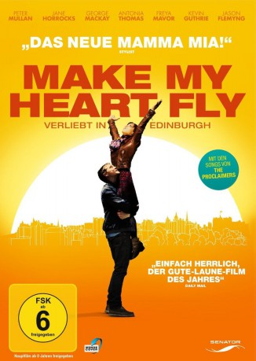

gesehen am 18.04.2015
gesehen am 18.04.2015Alternativ: Sunshine on Leith gesehen am 18.04.2015
 
 IMDB-Wertung: 6.6 / 10
IMDB-Wertung: 6.6 / 10  Metascore:
Metascore: 
Als die besten Freunde Davy und Ally vom Kriegseinsatz in Afghanistan in ihr altes Leben in Leith, einem Stadtteil von Edinburgh, zurückkehren, erwarten sie romantische Hochgefühle, aber auch Turbulenzen in ihren Familien. Davy verliebt sich in Yvonne, die beste Freundin seiner Schwester Liz, während Ally seine Bindung zu Liz langfristig untermauern will. Doch hier ziehen unerwartet Probleme auf - wie auch in der Beziehung von Davys und Liz' Eltern, die von einer Enthüllungsbombe erschüttert wird.
Jahr: 2013
Dauer: 100 Minuten
FSK: 6
Land: England Studio: Senator FilmTonspuren: DTS - ,
Untertitel: Deutsch,
Auflösung: 1080p (1920x800) Größe: 4710 MB
Genre: Komödie, Drama, Musical, Liebe
Regisseur:  Dexter Fletcher
Dexter Fletcher
Drehbuch: Stephen Greenhorn, Stephen Greenhorn
Soundtrack: Paul Englishby
Darsteller:
 Jane Horrocks als Jean
Jane Horrocks als Jean Peter Mullan als Rab
Peter Mullan als Rab Freya Mavor als Liz
Freya Mavor als Liz Jason Flemyng als Harry
Jason Flemyng als Harry Dexter Fletcher als Drunk Outside Pub , uncredited
Dexter Fletcher als Drunk Outside Pub , uncreditedDatei: X:\2013(I-M)\Make My Heart Fly - Verliebt in Edinburgh (2013, FSK6, 1920x800).mkv seit 10.04.2015
Festplatte: HD 2013(I-Z)-2014(A-Z)
 Es gibt insgesamt 89 Filme in der Gruppe '2013(I-M)'
Es gibt insgesamt 89 Filme in der Gruppe '2013(I-M)'